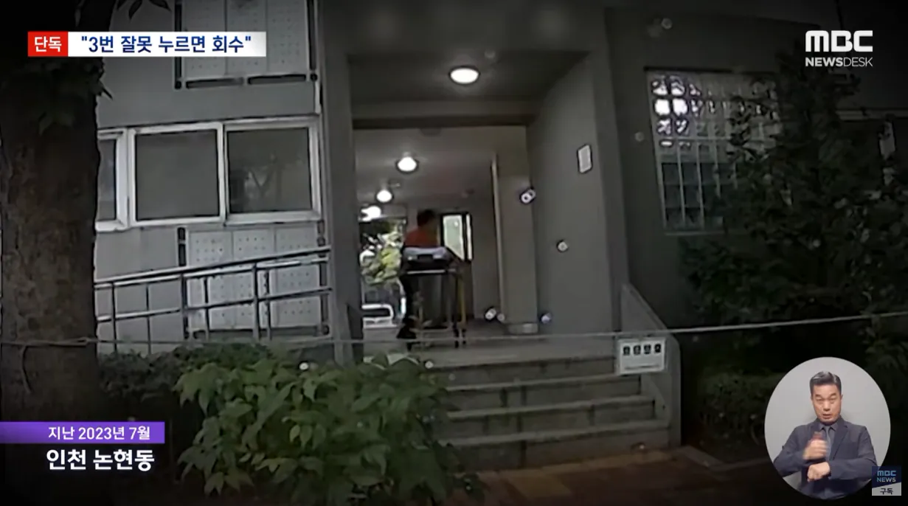
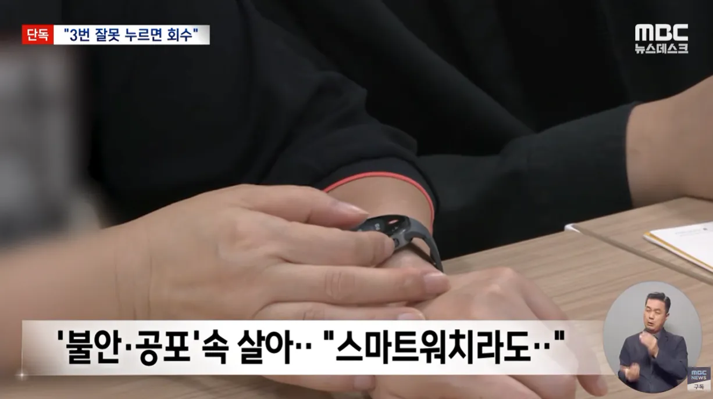
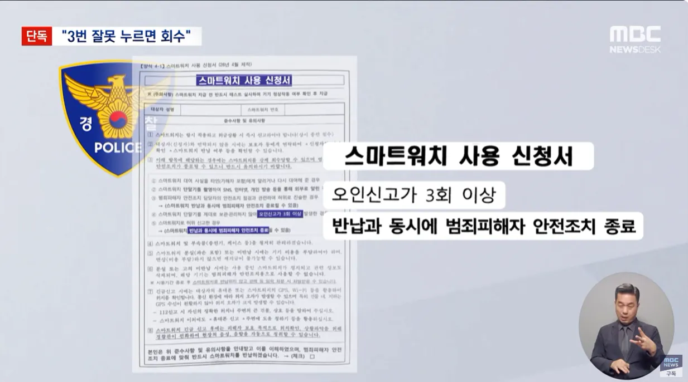
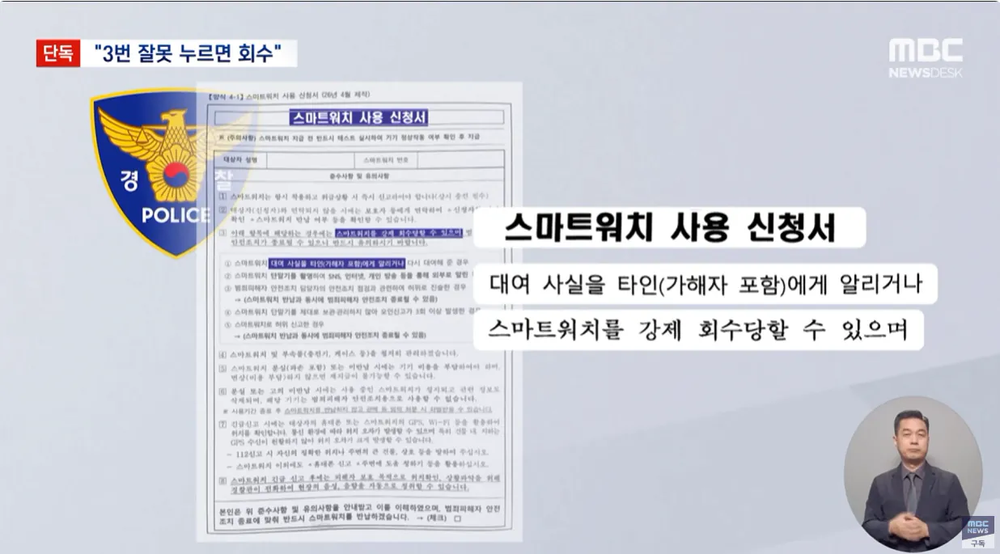
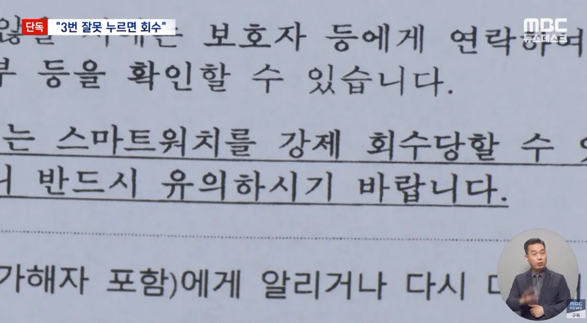
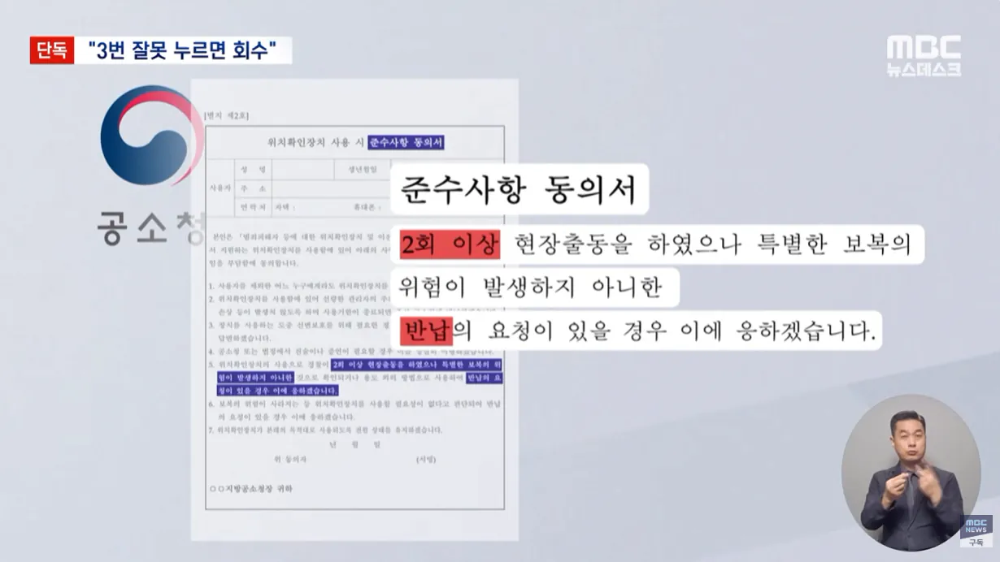
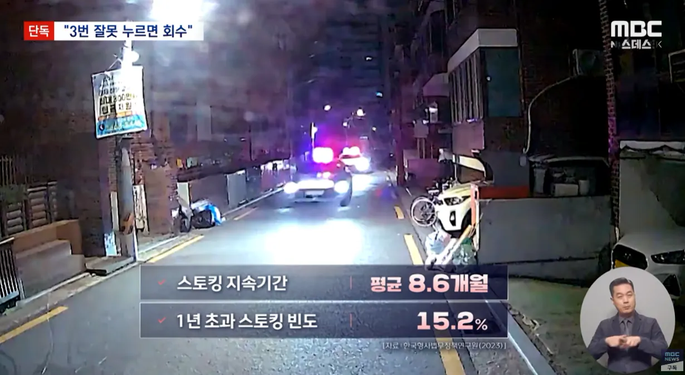

이건 뭔.....







이건 뭔.....
견찰씹찰좆찰 1승
전혀 아님 뜻
”도망칠 구석이 없는 상황이다“ 라는 말
또 견찰 너야?
"강제 회수"라는 문구를 넣어놓고 한다는 소리가
강제회수, 같은 문구가 있단 건 누군가 시도때도 없이 호출해대서 공권력 낭비한 사례가 있단 것이지. 이런 일에는 항상 트롤이 있었기 마련이다.
아무한테나 준 것도 아니고 피해자가 그런 트롤 짓을 한 거면 원인분석을 해서 심리치료를 해 주던가 하는 게 우선이지 일괄적으로 횟수 제한을 거는 게 맞는 거냐?
말은 쉽지. 막상 "스토커 신고자 심리상담 예산 ㅇㅇ억 편성" 이런 뉴스 나오면 사람들 반응이 어떨까. 궁여지책으로 보이는 사례들도 까보면 복잡한 일이 있었기 마련임.
오해할까봐 말하는데 트롤이라 표현했다고 일부러 그랬을 거란 말은 아님. 영화에서 좀비떼 몰고 오는 사람 중 악의 가진 사람이 얼마나 되겠음
말 조온나 쉽게 하네
니가 경찰 입장이라서 허구엇날 입력하는 피해자 있으면 알았어 이해해 내일도 심리치료 가보자가 될 것 같냐
세상에 미친 사람이 얼마나 많은데
차라리 처벌을 쎄게하는게 낫지 신체적인 피해랑 다르게 언제 끝날지도, 치료가 됐는지도 모를 심리치료를 나라돈으로 어디까지 해줘야되는데?
여기서도 시발 해줘~ ㅋㅋ 지가 병원가서 치료해야지 뭔 원인분석에 심리치료까지 풀코스 일발장전 ㅋㅋㅋ 시발 이게 복지냐? 병신버러지 똥닦아주는게?
https://www.police.go.kr/www/security/support/support01/support05.jsp 이미 그 병신버러지 똥딖이주는 제도가 있는데 기럼 자갓도 얼른 폐지해야겠네? 자런데로 토스하는게 뭐 어려운것도 아니고 그저 까고셒어서 인딜난 새끼들이네
경찰은 치안유지를 하는게 우선이지 정신병자 장애인똥수발드는게 머 시발 자랑이라고 자꾸 당연한듯이 요구해? 적당히 들어줄건 들어주고 트롤들은 쳐내라는거지 또 또 오바떤다
이제 경찰 이래도 내부자체조사 말고는 할 수 있는것도 앖어~
근데 출동 해야 할 인원은 정해져있는데 여기저기서 난리난 경우는 어떤 대책이 있나?? 미친놈들 많은 지역은 소용이 진짜 없을거 같은데...
당연히 없지. 근데 개드립에서는 항상 경찰이 나빠야해서 상관도 없지.
진짜 개 무능한걸 어디까지 티내냐......
고빈도 오인 또는 악용 신고 사례로 이러한 행정들을 하고 있고 의견을 재검토해보겠다. 라는 말 조차도 기대 안됨
3회 라는 이유도 있겠지만, 본문 자료처럼 이후에 어떻게 발생되는지에 대해서도 이야기 했다면 그럼 다시 한번 보고 검토들을 하는게 정상적이지만
공공기관들은 매 번 저런 소리만 하더라
'사실은 이렇습니다'
3회에서 5회로 변경하겠네 ㅋㅋ
진짜 짜바리 라는 말이 전혀 아깝지않음
앞에 나타나면 끝난거면 무슨소용이 있는거임
그니까 좆지랄이라는거지
확실할때 아니면 신고하지 마세요~이지랄하는데 확실할때=이미좆됨인거자너 ㅋㅋㅋ
그럼 확실하지 않은상황에 하루 12번씩 불러제껴도 다 가줘야된다는거?
세금으로 돈은 받지만
일하긴 싫어요~
근데 또 공무에 저런 사유가 생긴 건 보통 이유가 있음
시도 때도 없이 누르는 사람들이 있다는 것...
범죄자 새끼들 gps 달린 폭탄 목걸이 달아놔야 한다니까
강제회수도 아니고 할수있다고, 저거 여러번 오인신고해도 회수한거 본적이없음 그리고 저거 툭하면 눌러대거나 오인신고되는경우 존나많음
사람이 5명이 있다면 꼭 1명은 스마트워치를 미친듯이 누르기 마련이지
그렇다고 눌릴때마다 출동하면 행정력 낭비 아닌가? 어디 안전한 시설에 몇일 들어가 있던가
안타까운 사례도 있지만 저거 찬사람들 일부가 정병와서 배달기사가 초인종 누른거에 부르고, 등기가져온 우체부가 와도 부르고, 옆집개가 짖어도 부르고 이수준이면 개인경호원도 아니고 일일히 가줄수도 없는노릇임 저 규정도 저ㅈㄹ하는 사람이 있어서 생겼을거고
저건 당연히 해야 하는거 아님? 경찰이 뭐 놀고먹는 사람들도 아니고 누를때마다 반응해야하나? 3번이나 헛방 쳤으면 많이 참은거지.
저규정자체는 있는게맞지 스토킹 당한사람들 정신병 걸린사람도 있을꺼라 진짜시도때도없이누르는사람도있을거라..
정병 차단용임
타협안으로 분기별 호출숫자를 정해주는게 낫지않을까...한번씩 리셋 해줘야지ㅋㅋ
시도때도 누르는 놈들 때문에 어쩔수없음
논란일자 전혀아님 ㅋㅋㅋㅋㅋㅋㅋㅋㅋㅋㅋㅋㅋ